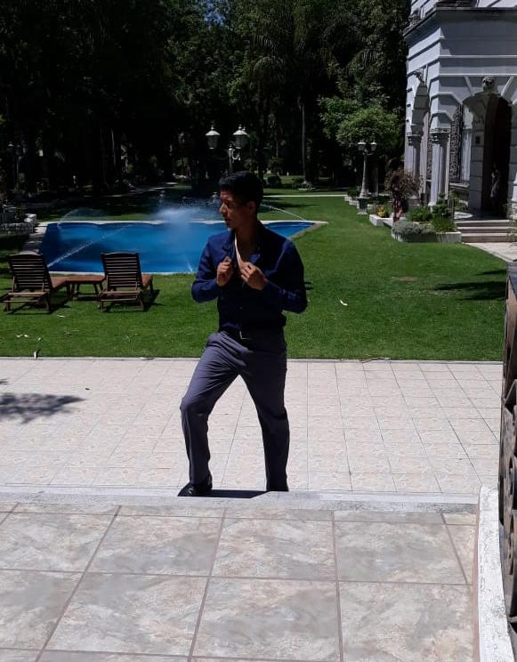
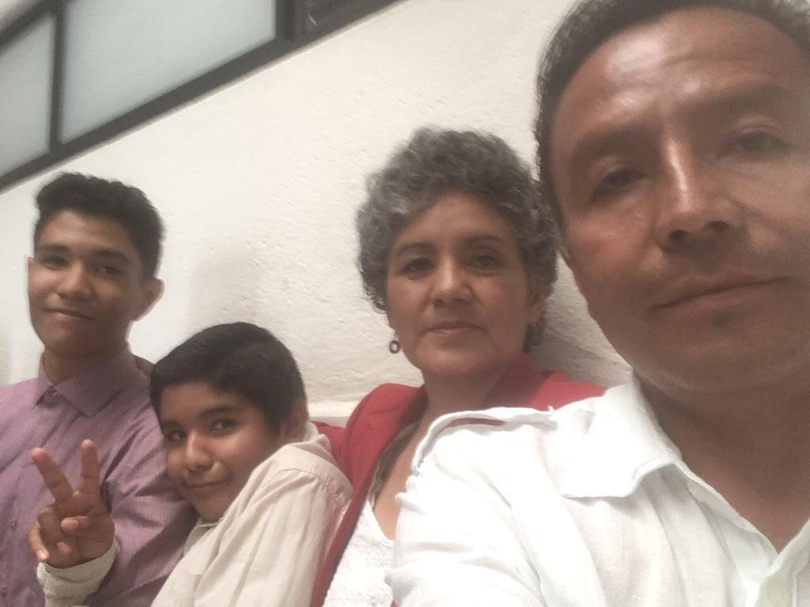

En esta página hallarás un breve resumen de mi vida, tanto personal como escolar, así también como cosas que me gustan y mis hobbies favoritos, espero te la pases muy bien.
¡Comenzamos!
Sobre mi:

Me llamo Emmanuel Cruz Chavero. Nací en un caluroso 30 de julio de 2001, en la maternidad de un hospital situado en estado de San Juan del Río. Los tres primeros años de mi vida fueron muy felices, rodeado de mi familia
viviendo en Huichapan, Hidalgo., y empezando a descubrir el mundo que me rodeaba. Sin embargo, durante el tercer año mis padres recibieron una oferta de trabajo en San Juan del Río, y así fue como terminé viviendo ahora aquí.
Estoy muy fascinado con el mundo del gaming, es mi pasión desde que era pequeño por ahí de los 11 años, tuve mi primera computadora a esa edad, y recuerdo que el primer juego que jugué y completé fue Halo: Combat Evolved (conocido como Halo 1) y desde
ahí surgió mi amor por los juegos.

Mi Familia
Mi familia está conformada por: mi papá Isidro, mi mamá Marivel y mis hermanos Adriel y Axel. Actualmente vivo con ellos y desde que tengo memoria han sido mi hogar, agradezco tener una familia como ellos.
Mis Hobbies
Mi hobby o pasatiempo favorito en un principio fue el futbol, incluso estuve en un equipo. Todo cambio cuando entré en la preparatoria, conocí amistades que me enseñaron a jugar Baloncesto y le agarre un amor al juego bastante grande,
ahora admiro al deporte y lo practico casi siempre en mis tiempos libres.